A VERBODSTEKENS
Rijnvaartpolitiereglement 1995
A.1 | In-, uit- of doorvaren verboden (algemeen teken) ( artikelen 3.25, lid 1, onder b, 6.08, lid 2, 6.16, lid 4, 6.22, lid 1, 6.22a, 6.25, lid 1, 6.27, lid 1, 6.28a, 9.02, leden 5 en 6, en 10.01, lid 4 onder c) | |
óf borden | 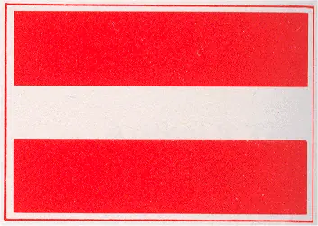 | |
óf rode lichten | 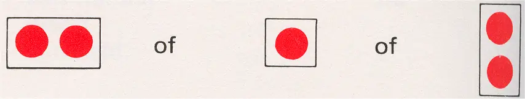 | |
óf rode vlaggen | 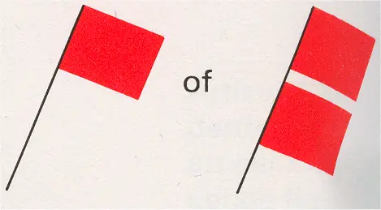 | |
Het gebruik van twee boven elkaar geplaatste lichten of vlaggen duidt een verbod van langere duur aan. | ||
A.1a | Buiten gebruik gestelde gedeelten van de vaarweg; vaarverbod, niet geldend voor een klein schip dat geen motorschip is. (artikel 6.22, lid 2, onder a) | 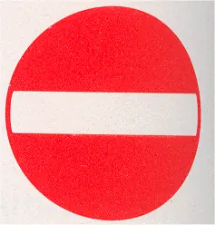 |
A.2 | Voorbijlopen verboden. (artikel 6.11) | 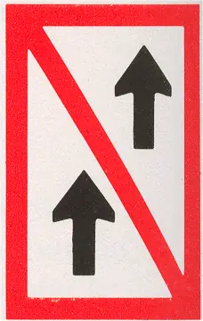 |
A.3 | Voorbijlopen verboden voor samenstellen onderling. Het verbod geldt niet, wanneer ten minste één van beide betrokken samenstellen een duwstel is waarvan de lengte en de breedte niet meer bedragen dan 110 m respectievelijk 12 m. (artikel 6.11) | 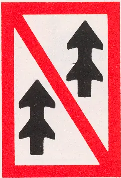 |
A.4 | Ontmoeten en voorbijlopen verboden. (artikel 6.08, lid 1) | 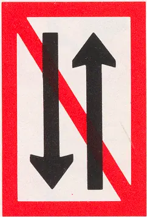 |
A.5 | Verboden ligplaats te nemen aan de zijde van de vaarweg waar het bord is aangebracht. (artikel 7.02, lid 1 onder c) | 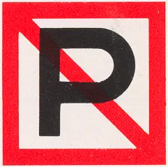 |
A.5.1 | Verboden ligplaats te nemen binnen de in meters aangegeven breedte te rekenen vanaf het bord. (artikel 7.02, lid 1 onder I) | 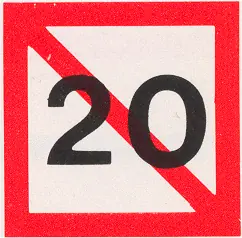 |
A.6 | Verboden te ankeren en ankers, kabels en kettingen te laten slepen aan de zijde van de vaarweg waar het bord is aangebracht. (artikelen 6.18, lid 2, en 7.03, lid 1 onder b) | 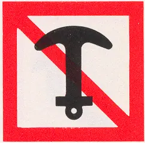 |
A.7 | Verboden te meren aan de zijde van de vaarweg waar het bord is aangebracht. (artikel 7.04, lid 1 onder b) | 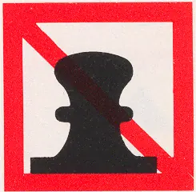 |
A.8 | Verboden te keren. (artikel 6.13, lid 4) | 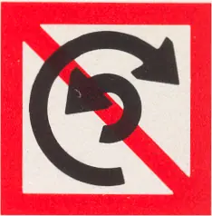 |
A.9 | Verboden hinderlijke waterbeweging te veroorzaken. artikelen 6.20, eerste lid, onderdeel e, en 15.07, achtste lid, onderdeel b | 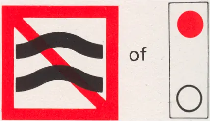 |
A.10 | Verboden buiten de aangegeven begrenzing te varen. (artikel 6.24, lid 2 onder a) | 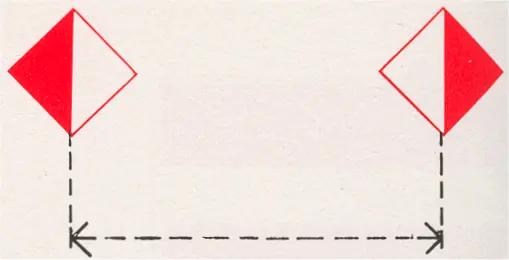 |
A.11 | In-, uit-, of doorvaren verboden, wordt aanstonds toegestaan. (artikel 6.28a, lid 1 onder c) | 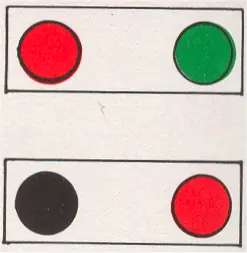 |
A.12 | A.12 Verboden voor motorschepen (artikel 6.22, tweede lid, onder b) | |
A.13 | niet overgenomen | |
A.14 | Verboden te waterskiën. | 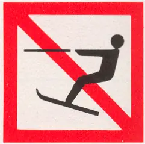 |
A.15 | Verboden voor zeilschepen. | 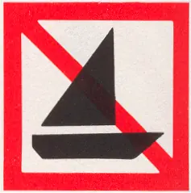 |
A.16 | Verboden voor door spierkracht voortbewogen schepen. | 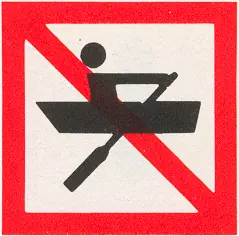 |
A.17 | Verboden voor zeilplanken. | 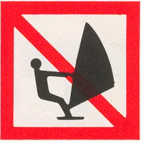 |
A.18 | Verboden voor waterscooters. | 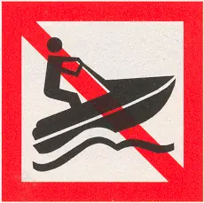 |